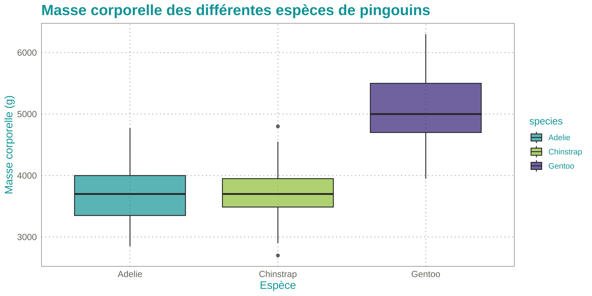

InraeThemes is a collection of R-related templates, themes, and other graphical elements based on formats related to R and in accordance with the INRAE design system.
The goal of this üì¶ is to provide a easy to use themes and color palettes for INRAE engineers and researchers. These are an unofficial and opiniated templates.
Related work
- The quarto-inrae-extension which provides a wide range of quarto-based formats for documents, slides and projects.
Prerequisites
To make the full use of this package, you will need the Raleway font that can be downloaded here
Installation
The package can be installed using:
# install.packages("remotes")
remotes::install_github("davidcarayon/InraeThemes")Note: Older versions with Rmarkdown templates (i.e., 1.0.1) can still be downloaded using:
# install.packages("remotes") remotes::install_github("davidcarayon/InraeThemes@v1.0.1")
ggplot2 themes and scales
Customize your ggplots using INRAE’s colors with theme_inrae() and/or scale_<fill/color>_inrae().
Here are examples using the palmerpenguins dataset.
library(InraeThemes)
library(ggplot2)
library(palmerpenguins)
# If needed
# sysfonts::font_add_google("Raleway")
# Load the fonts
showtext::showtext_auto()
ggplot(penguins, aes(x = flipper_length_mm, y = body_mass_g, color = species)) +
geom_point(size = 3, alpha = 0.7) +
labs(
title = "Relation entre la longueur des nageoires et la masse corporelle",
subtitle = "Données des pingouins par espèce",
x = "Longueur des nageoires (mm)",
y = "Masse corporelle (g)"
) +
theme_inrae() +
scale_color_inrae()
ggplot(penguins, aes(x = species, y = body_mass_g, fill = species)) +
geom_boxplot(alpha = 0.7) +
labs(
title = "Masse corporelle des différentes espèces de pingouins",
x = "Espèce",
y = "Masse corporelle (g)"
) +
theme_inrae() +
scale_fill_inrae()
ggplot(penguins, aes(x = bill_length_mm, fill = species)) +
geom_histogram(binwidth = 2, position = "stack", color = "white") +
labs(
title = "Distribution de la longueur du bec des pingouins",
x = "Longueur du bec (mm)",
y = "Fréquence"
) +
theme_inrae() +
scale_fill_inrae()
ggplot(penguins, aes(x = flipper_length_mm, fill = species)) +
geom_density(alpha = 0.6) +
labs(
title = "Distribution de la longueur des nageoires par espèce",
x = "Longueur des nageoires (mm)",
y = "Densité"
) +
theme_inrae() +
scale_fill_inrae()
ggplot(penguins, aes(x = flipper_length_mm, y = body_mass_g, color = island)) +
geom_point(size = 3, alpha = 0.7) +
labs(
title = "Dimensions des nageoires et masse corporelle par espèce et île",
x = "Longueur des nageoires (mm)",
y = "Masse corporelle (g)"
) +
theme_inrae() +
scale_color_inrae() +
facet_wrap(~species)gt theme
This package also provides a {gt} theme with theme_inrae_gt():
library(gt)
penguins |>
head(10) |>
gt() |>
tab_header(
title = md("**Caractéristiques des pingouins**"),
subtitle = "Sous-titre du tableau"
) |>
theme_inrae_gt()| Caractéristiques des pingouins | |||||||
| Sous-titre du tableau | |||||||
| species | island | bill_length_mm | bill_depth_mm | flipper_length_mm | body_mass_g | sex | year |
|---|---|---|---|---|---|---|---|
| Adelie | Torgersen | 39.1 | 18.7 | 181 | 3750 | male | 2007 |
| Adelie | Torgersen | 39.5 | 17.4 | 186 | 3800 | female | 2007 |
| Adelie | Torgersen | 40.3 | 18.0 | 195 | 3250 | female | 2007 |
| Adelie | Torgersen | NA | NA | NA | NA | NA | 2007 |
| Adelie | Torgersen | 36.7 | 19.3 | 193 | 3450 | female | 2007 |
| Adelie | Torgersen | 39.3 | 20.6 | 190 | 3650 | male | 2007 |
| Adelie | Torgersen | 38.9 | 17.8 | 181 | 3625 | female | 2007 |
| Adelie | Torgersen | 39.2 | 19.6 | 195 | 4675 | male | 2007 |
| Adelie | Torgersen | 34.1 | 18.1 | 193 | 3475 | NA | 2007 |
| Adelie | Torgersen | 42.0 | 20.2 | 190 | 4250 | NA | 2007 |
Bootstrap theme
This package also provides a Sass theme built with {bslib}: bs_inrae(). Preview the theme with:
bslib::bs_theme_preview(bs_inrae())
And can be used in any Shiny app with :
ui <- fluidPage(
theme = InraeThemes::bs_inrae(),
...
)Project templates
This package provides an opinionated project directory structure for data analysis which can be either used by going though Projects > New Project > New Directory in Rstudio or by using :
new_analysis("myproj")